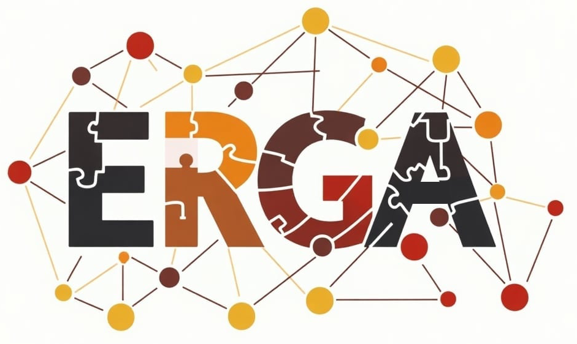

Orléans (France) | September 28, 2026
In conjunction with:The 30th European Conference on Advances in Databases and Information Systems (ADBIS 2026)
Aims & Scope
In the era of a connected world and abundant data and the rise of knowledge graphs and Linked Data ecosystems, entity resolution and graph alignment have come to play an increasingly important role for ensuring data consistency, accuracy, and quality. Entity resolution identifies and links records referring to the same real-world entities (e.g., people, organizations) despite inconsistencies and has been a cornerstone of data integration with applications in finance, healthcare and various other domains. Graph alignment maps nodes and edges across different graphs taking into account the relationships and structures between the entities and has become central to integrating knowledge graphs, merging ontologies and aligning large-scale Linked Data. Both of these tasks share common challenges, particularly in handling large-scale data, requiring efficient solutions and deploying techniques from a great variety of research areas such as database management, big data and parallel processing, machine learning and AI-based techniques, and others.
Recognizing the common ground between entity resolution and graph alignment, the goal of this workshop is to bring together researchers, practitioners and experts in both fields to introduce new methods and techniques, discuss open challenges, share benchmarks and explore future research directions across relational, graph-based and Linked Data environments. The workshop aims to facilitate the exchange of new ideas in each of the two fields, while also highlighting their shared goals and provide new opportunities for collaborations.
Topics of Interest
Topics of interest include but are not limited to:- Instance matching
- Blocking and filtering for entity resolution
- Named entity resolution
- Collective entity resolution
- Knowledge graph entity alignment
- Knowledge graph completion and consolidation
- LLM-assisted entity linking and graph merging
- Ontology matching
- Identity linking in Linked Data
- Explainable AI for identity resolution
- Cross-lingual entity alignment
- Learning based approaches (supervised and unsupervised methods) to entity resolution and graph alignment
- Representation learning for graph alignment
- Deep learning based approaches for graph alignment
- Crowdsourcing for entity resolution and graph alignment
- Dynamic graph entity alignment
- Streaming entity resolution
- Entity resolution for big data
- Parallel entity resolution
- Privacy-preserving entity resolution and graph alignment
- Fairness in entity resolution
- Entity resolution for geospatial data
- Empirical comparison of entity resolution methods
- Benchmarks for entity resolution and graph alignment
- Data fusion
- Tools and platforms
- Linked Data management
- Applications in areas such as scientific, biomedical, governmental, cultural data
Submission Guidelines
In ERGA workshop, two types of submissions are possible:- LONG (research or experimental) papers: 15 LNCS style pages, including references
- SHORT (early findings or visionary) papers: up to 10 LNCS style pages, including references
Papers should be in English and present original work, not already published elsewhere. Authors should consult Springer's authors' guidelines and use their proceedings templates, either for LaTeX (preferred) or for Word, for the preparation of their papers:
Papers should be submitted in PDF format using the EasyChair Conference System.
Accepted workshop papers will be published in Springer's Communications in Computer and Information Science (CCIS) series.
We kindly ask authors to adopt inclusive language in their papers and presentations, and all participants to adopt a proper Code of Conduct. More details may be found here:
Important Dates
TBA
Workshop Chairs
- Georgia Koloniari, University of Macedonia (Greece)
- Alexandros Karakasidis, University of Macedonia / Athena RC (Greece)
Program Committee
TBA